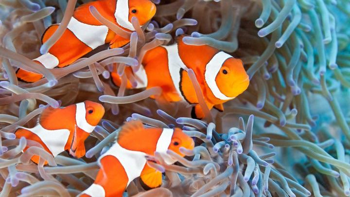

Caring for Clownfish: A Comprehensive Guide from Kotoko Aquarium Store
Discover the art of caring for clownfish and similar species with Kotoko Aquarium Store's comprehensive guide. Begin by setting up a spacious tank with proper filtration and temperature control, offering hiding spots through live rocks or structures. Maintain pristine water quality through regular testing and a reliable protein skimmer.
Ensure a balanced diet for your clownfish, incorporating high-quality flakes, pellets, and live or frozen foods, with marine algae to mimic their natural diet. Consider introducing compatible tank mates and, optionally, symbiotic anemones for a harmonious environment. Regular health monitoring, quarantine for new additions, and access to quality medications from our store will help ensure the well-being of your clownfish. At Kotoko Aquarium Store, our knowledgeable staff is ready to guide you on this exciting aquatic journey, offering expert advice, quality supplies, and a community of enthusiasts who share your passion. Dive into the world of vibrant aquatic life with confidence and joy. Happy fish-keeping!